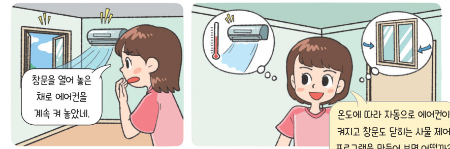

‘그리고’, ‘또는’, ‘아니다’는 프로그램이 판단할 때 쓰는 논리 연산자이다. 공 피하기 게임으로 AND·OR·NOT을 몸으로 느끼고, 놀이공원 입장료 계산기와 온도에 따라 스스로 움직이는 에어컨·히터·창문을 직접 조절해 보자.
논리 연산은 논리의 참과 거짓을 판별하는 것으로 논리곱(AND), 논리합(OR), 논리 부정(NOT)의 논리 연산자를 사용한다.
| 연산자 | 의미 |
|---|---|
| 논리곱(AND) 참 그리고 참 | 두 조건이 모두 참일 때에만 참 |
| 논리합(OR) 참 또는 거짓 | 두 조건 중 하나라도 참일 때 참 |
| 논리 부정(NOT) 참 (이)가 아니다 | 조건이 참일 때 거짓, 조건이 거짓일 때 참 |
| A | B | A AND B | A OR B | NOT A |
|---|---|---|---|---|
| 참 | 참 | |||
| 참 | 거짓 | |||
| 거짓 | 참 | |||
| 거짓 | 거짓 |
| 위쪽 화살표와 w키를 동시에 눌렀는지 확인하기 → 숨기 | |
| 위쪽 화살표 또는 w키를 눌렀는지 확인하기 → 점프 | |
| 농구공에 닿지 않았는지 확인하기 → 그동안 계속 반복 |
| 15세, 7월 | |
| 7세, 3월 | |
| 70세, 8월 | |
| 25세, 10월 | |
| 19세, 12월 | |
| 20세, 1월 |
| 14세 이상이고 20세 미만 | |
| 8세 미만이거나 70세 이상 | |
| 7월 또는 8월이 아니다 |
➊ 에어컨은 26 °C 이상이면 작동하고 아니면 멈춘다. ➋ 히터는 15 °C 미만이면 작동하고 아니면 멈춘다. ➌ 창문은 에어컨 또는 히터가 작동 중이면 닫히고 아니면 열린다. 해 보기 ➍ 저녁 7~9시에 조명이 켜진다. ➎ 전등이 켜져 있으면 에너지 사용 시간을 1초마다 1, 히터 또는 에어컨이 작동 중이면 1초마다 3 증가시킨다.
| 30 °C | |
| 26 °C | |
| 20 °C | |
| 15 °C | |
| 10 °C |
| 에어컨이 온도 값에 따라 작동하고 멈추는가? | |
| 히터가 온도 값에 따라 작동하고 멈추는가? | |
| 창문은 에어컨과 히터의 작동에 따라 열리고 닫히는가? |
| ‘A AND B’가 참이면 ‘A OR B’도 반드시 참이다. | |
| ‘NOT (나이 < 8)’은 ‘나이 ≥ 8’과 같다. | |
| ‘나이 < 8 AND 나이 ≥ 70’을 만족하는 사람이 있다. |
| 평가 기준 | 스스로 평가 |
|---|---|
| 논리 연산자의 의미를 설명할 수 있는가? | |
| 논리 연산자를 이용하여 놀이공원 입장료 계산 프로그램을 작성할 수 있는가? | |
| 논리 연산을 활용하여 사물을 제어하는 프로그램을 설계할 수 있는가? |